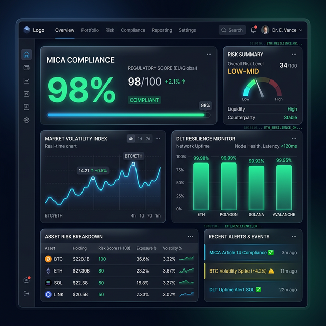

**Settlement risk** (or Herstatt risk) is one of the greatest challenges in wholesale finance. It occurs when one party to a transaction delivers the asset but does not receive the corresponding payment due to a time lag or an operational failure.
| Feature | Traditional Cycle | Atomic DLT Cycle |
|---|---|---|
| Settlement Period | T+2 (two business days) | T+0 (instantaneous) |
| Counterparty Risk | High during the wait period | Near-zero (Simultaneity) |
| Capital Consumption | Significant (T+2 Collateral) | Optimized (Immediate release) |
| DvP Mechanism | Off-chain (DVP via third parties) | On-chain (DvP via code) |
True atomic settlement requires that both the asset (token) and the payment (Cash-on-Chain or CBDC) reside on the same ledger. DCM Core enables monitoring and validating these atomic transactions, ensuring that no "data poverty" compromises the process.
By eliminating the settlement delay (moving from T+2 to T+0), institutions can significantly reduce immobilized collateral (guarantees). This frees up capital that can be reinvested, directly improving ROE (Return on Equity).
Even on the blockchain, failures can occur (connectivity issues, smart contract errors). DCM Core provides a real-time dashboard to identify root causes and automate remediation procedures, in compliance with CSDR requirements.
Automate your atomic DvP settlements and optimize the use of your regulatory capital.

View the full framework: Institutional Blockchain Adoption
Continue with Audit-Ready Architecture or return to the Strategic Hub.